Laporan Magang
Tenaga Teknis Survei Pemetaan
Kantor Pertanahan Kota Banjar — ATR/BPN
4
Berkas Selesai
3
Minggu Aktif
0
Jumlah Absen
Saya adalah mahasiswa yang sedang melaksanakan kegiatan magang di Kantor Pertanahan Kota Banjar, di bawah naungan Kementerian ATR/BPN. Selama magang, saya ditempatkan di Bidang Tenaga Teknis Survei Pemetaan.
Kegiatan magang ini bertujuan untuk mengaplikasikan ilmu yang diperoleh di bangku perkuliahan ke dalam praktik nyata di lapangan, khususnya dalam bidang survei, pemetaan, dan digitalisasi data pertanahan.
Program kegiatan selama magang di Bidang Teknis Survei Pemetaan
Orientasi dan melakukan instalasi AutoCAD, kemudian mempelajari penggunaannya untuk keperluan pemetaan bidang tanah.
Menyortir dokumen Kelurahan Purwaharja dan melakukan kunjungan ke kantor kelurahan untuk sosialisasi bidang tanah yang belum terpetakan.
Melakukan scan terhadap dokumen-dokumen pertanahan fisik untuk didigitalisasikan ke dalam sistem pengarsipan digital.
Melakukan digitasi dan plotting Kelurahan Purwaharja dan Desa Karyamukti menggunakan perangkat lunak pemetaan.
Melakukan survei lapangan ke Kecamatan Situ Batu bersama Bapak Ganda untuk verifikasi dan pengambilan data bidang tanah secara langsung.
Dokumentasi kegiatan selama magang di ATR/BPN Banjar
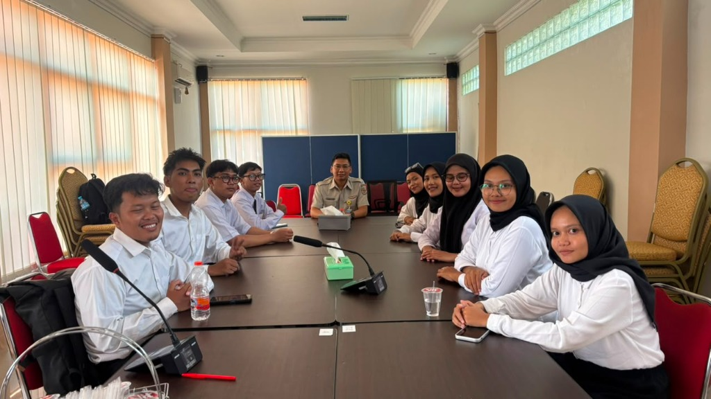
[Hari, Tanggal]
Kegiatan pengarahan dan pengenalan lingkungan kerja di kantor ATR/BPN Banjar bersama seluruh rekan magang dan pembimbing. Mempelajari struktur organisasi dan pembagian tugas masing-masing divisi.
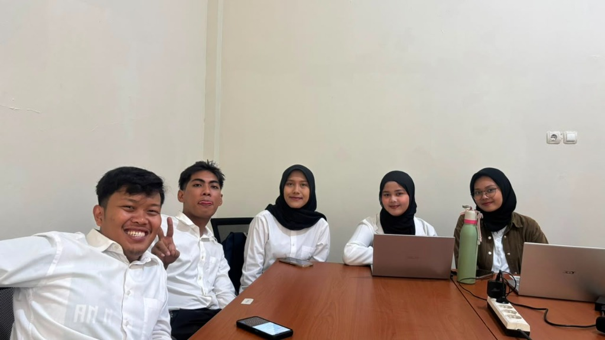
[Hari, Tanggal]
Melakukan instalasi AutoCAD di komputer kantor, kemudian mulai mempelajari dasar-dasar penggunaan AutoCAD untuk keperluan pemetaan bidang tanah.
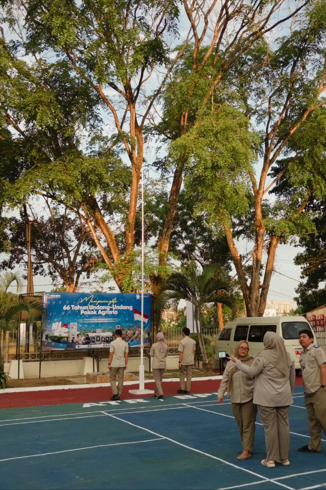
[Hari, Tanggal]
Persiapan dan latihan upacara di lapangan kantor ATR/BPN untuk memperingati perayaan dan menanamkan kedisiplinan.
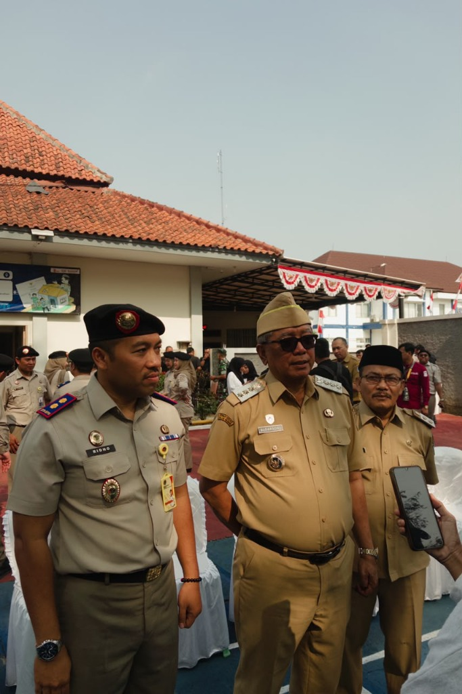
[Hari, Tanggal]
Perayaan ulang tahun kantor ATR/BPN Kota Banjar yang turut dihadiri oleh Walikota Ciamis beserta jajaran FORKOMPIMDA.
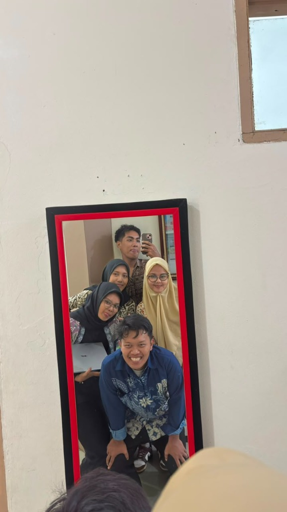
[Hari, Tanggal]
Menyortir dan mengklasifikasikan dokumen Kelurahan Purwaharja sebagai persiapan kegiatan sosialisasi dan pemetaan bidang tanah yang belum terdaftar.
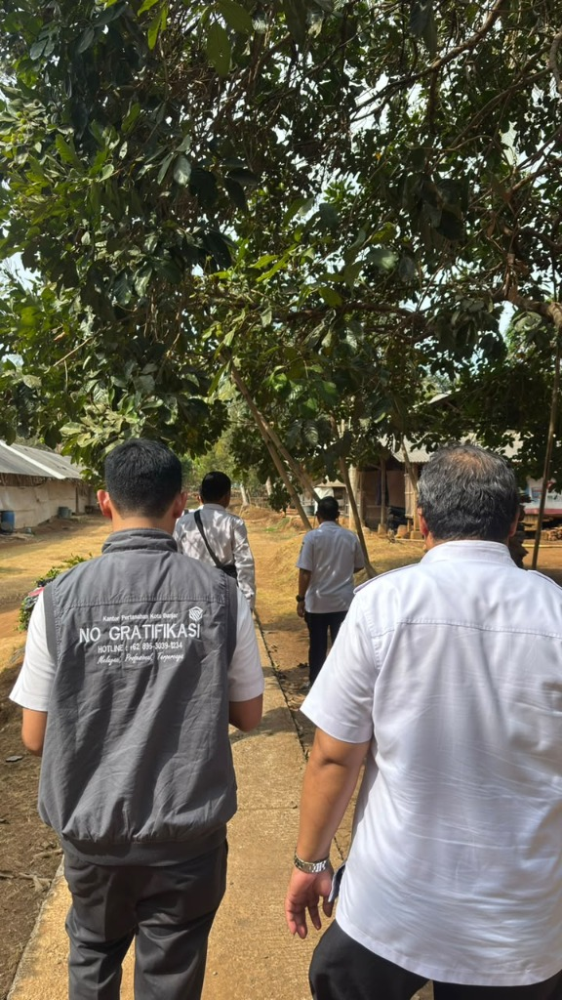
Senin, 28 September 2026
Kegiatan digitalisasi bidang tanah di wilayah Purwaharja. Turun langsung ke lokasi untuk mengumpulkan data spasial yang akurat sebagai bagian dari program pemetaan.
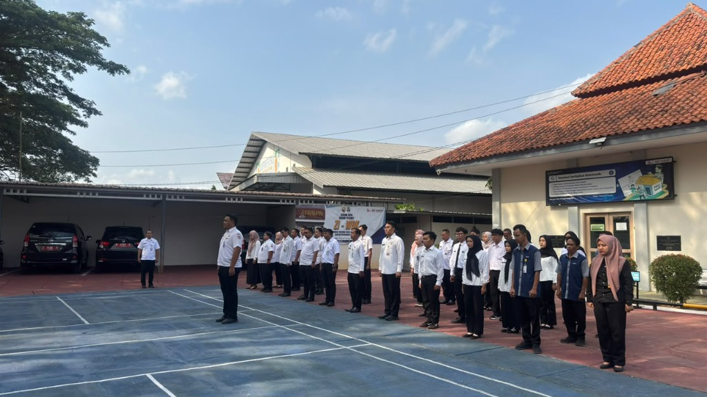
Selasa, 29 September 2026
Pelaksanaan apel pagi rutin bersama seluruh pegawai kantor ATR/BPN Kota Banjar sebagai bagian dari disiplin kerja harian.
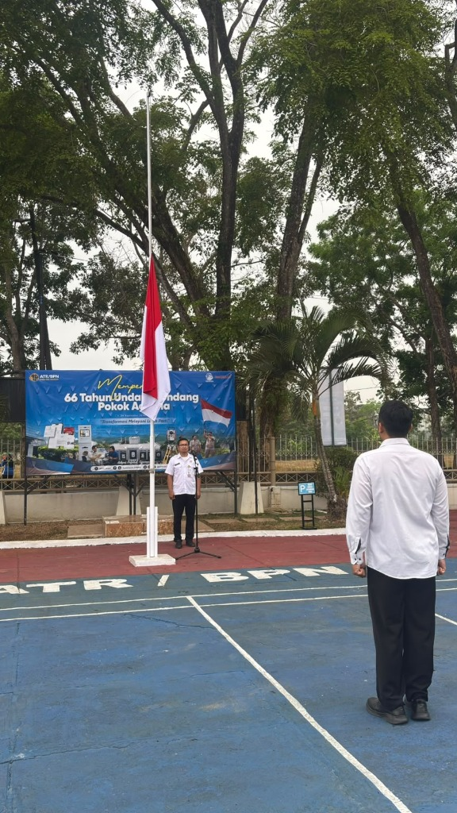
Rabu, 30 September 2026
Upacara peringatan 66 Tahun Undang-Undang Pokok Agraria (UUPA) yang diselenggarakan di lapangan kantor ATR/BPN Kota Banjar.
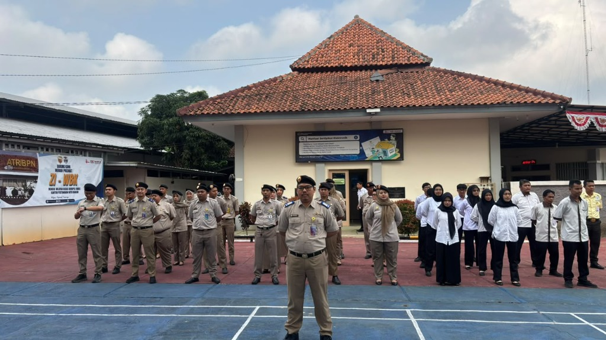
Kamis, 1 Oktober 2026
Apel bersama seluruh pegawai dan peserta magang di halaman kantor ATR/BPN untuk memperkuat rasa kebersamaan dan profesionalisme.
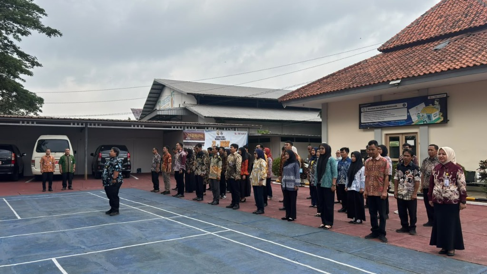
Jumat, 2 Oktober 2026
Apel harian dengan mengenakan pakaian batik sebagai bentuk penghargaan terhadap budaya Indonesia di lingkungan kantor ATR/BPN.
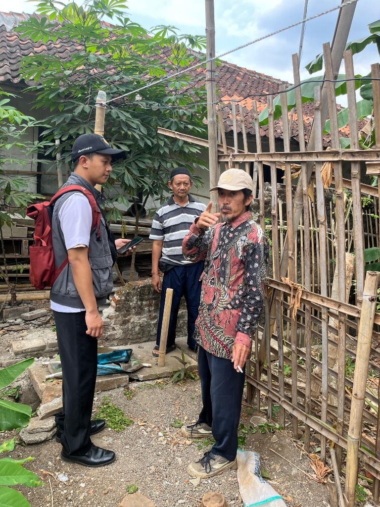
Senin, 5 Oktober 2026
Tim ATR/BPN turun langsung ke lapangan bersama warga untuk memverifikasi dan mengklarifikasi batas-batas bidang tanah yang akan didigitalisasi.
Selasa, 6 Oktober 2026
Apel pagi rutin dilanjutkan dengan pengolahan data hasil survei lapangan menggunakan perangkat lunak pemetaan di kantor ATR/BPN.
Rabu, 7 Oktober 2026
Apel pagi bersama pegawai dilanjutkan dengan kegiatan digitasi dan plotting peta bidang tanah wilayah Purwaharja menggunakan AutoCAD.
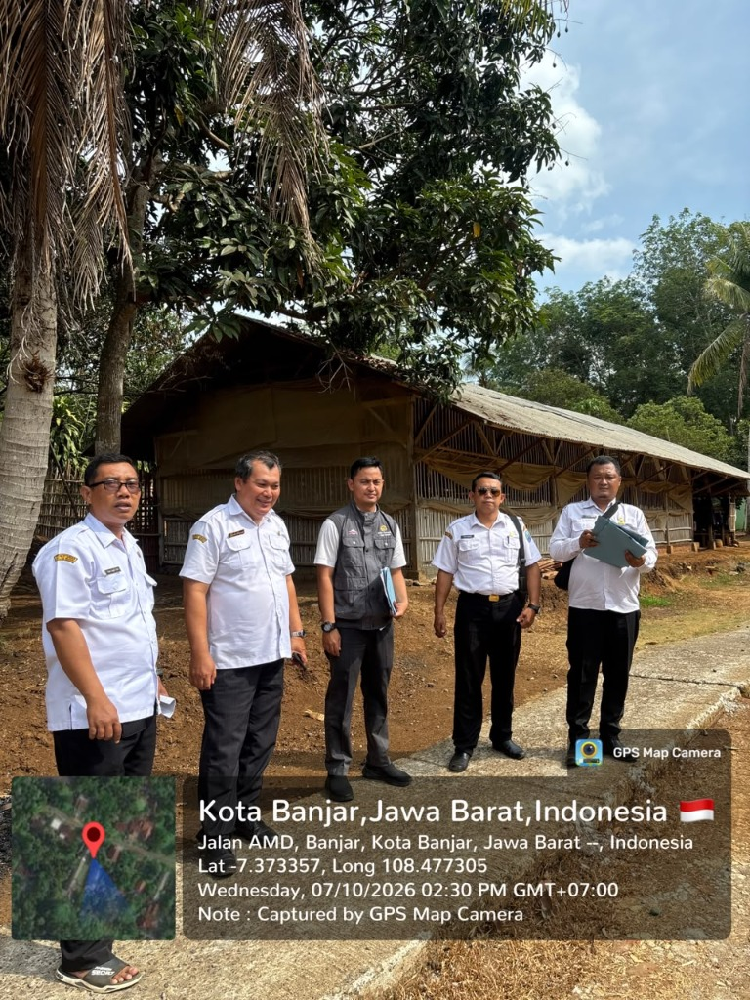
Kamis, 8 Oktober 2026
Inspeksi dan verifikasi bidang tanah di Jalan AMD, Kota Banjar bersama pejabat ATR/BPN untuk memastikan kesesuaian data dengan kondisi nyata di lapangan.
Jumat, 9 Oktober 2026
Apel akhir pekan bersama seluruh pegawai dan peserta magang, dilanjutkan dengan evaluasi progress kegiatan minggu ketiga dan penyusunan rencana kerja selanjutnya.
Daftar berkas pekerjaan yang telah diselesaikan selama magang
Tenaga Teknis Survei Pemetaan
–
Total Berkas
Memuat data...